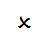
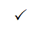

统一建模语言理论测试
考试科目：统一建模语言
时间： 100分钟
得分：
班级（必填）：
学号（必填）：
姓名（必填）：
一、填空题（每空5分，共20分）
1. UML的中文全称是：
2. 对象最突出的特征是：
二、选择题（每题10分，共20分）
1. UML与软件工程的关系是：
(A)UML就是软件工程
(B)UML参与到软件工程中软件开发过程的几个阶段
(C)UML就是软件工程
(D)UML就是软件工程
2.Java语言支持：
(A)单继承
(B)多继承
(C)单继承和多继承
(D)单继承和多继承都不支持
三、多项选择题（每题10分，共20分）
1.用例的粒度分为以下哪三种：
(A)概述级
(B)需求级
(C)用户目标级
(D)子功能级
2.类图由以下哪三种部分组成：
(A)名称(Name)
(B)属性(Attribute)
(C)操作(Operation)
(D)方法(Function)
四、判断题（每题10分，共20分）
1.用例图只是用于和客户交流和沟通的，用于确定需求，


2.在状态图中终止在一个状态图中允许有任意多个。
五、简答题（每题20分，共20分）
1.简述什么是模型以及模型的表现形式？